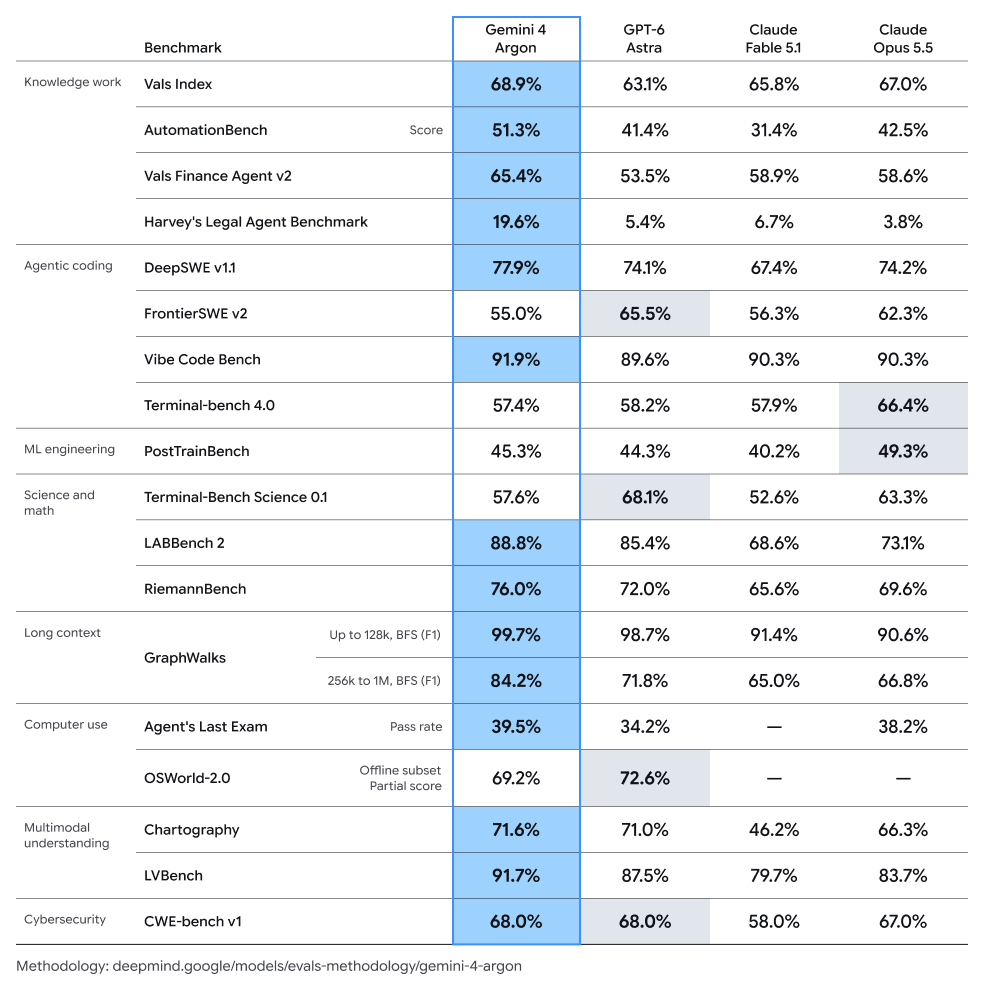
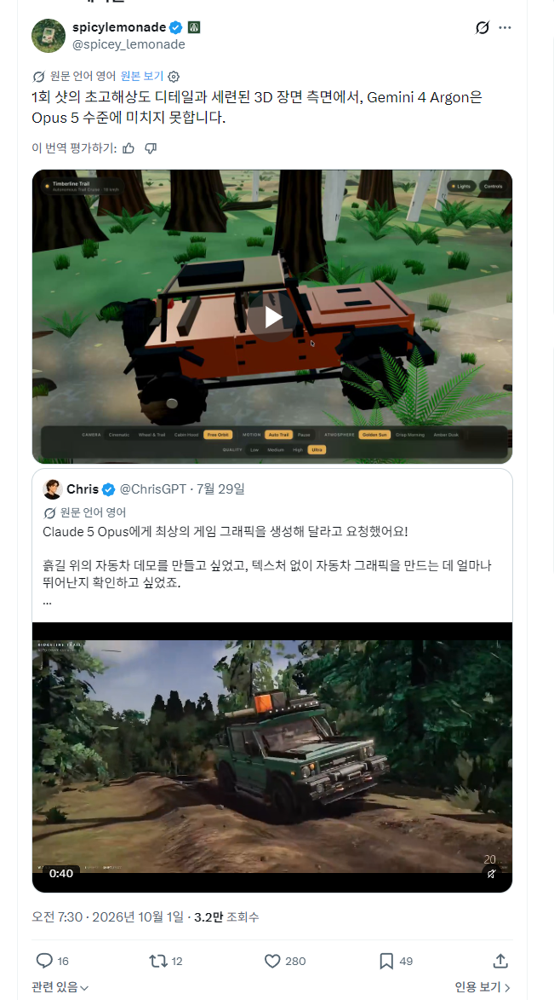
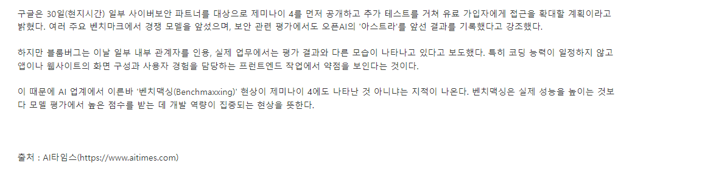

이번에 발표한 준수한 성능으로 타 최상급 모델과 어깨를 나눈다는 구글의 제미나이 4.벤치는 매우 좋다.
근데 정작 실 사용자와 내부 소식은 이 벤치와는 달리 먼가 들려오는 소식이 좀 그렇다.
(1) X에서 spicylemonade 님 : "In terms of 1 shot hyper detail and tasteful 3d scenes, Gemini 4 argon is not opus 5 level. https://t.co/QuSx1gjXJq" / X


참고로 이런짓을 잘하는 대표적 모델이 그록이다.그록도 벤치는 좋은데 실제로 써보면 먼가 좀...조만간 제미나이 4가 사용자들에게 본격적으로 풀릴테니 성능을 기대해보자..

제미나이! 믿고 있었다고